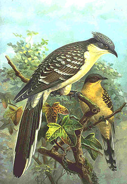
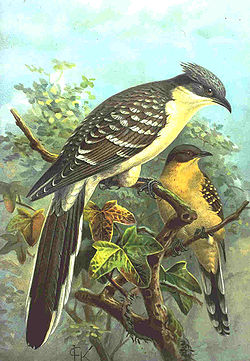

| Great Spotted Cuckoo | |
|---|---|
|  | |
| adult and juvenile | |
| Conservation status | |
| Binomial name | |
| Clamator glandarius (Linnaeus, 1758) |
| Great Spotted Cuckoo | |
|---|---|
|  | |
| adult and juvenile | |
| Conservation status | |
| Binomial name | |
| Clamator glandarius (Linnaeus, 1758) |
The Great Spotted Cuckoo, Clamator glandarius, is a member of the cuckoo order of birds, the Cuculiformes, which also includes the roadrunners, the anis, the coucals, and the Hoatzin.
It is a widespread summer migrant to southeast and southwest Europe and western Asia, and winters in Africa. It is a brood parasite, which lays its eggs in the nests of corvids (especially magpies), and starlings.
This species is slightly larger than the Common Cuckoo at 35-39 cm length, but looks much larger with its broad wings and long narrow tail.
Unlike the Common Cuckoo, neither the hen nor the hatched chick of this species evict the host's eggs, but the young magpies often die because they cannot compete successfully with the cuckoo for food.
The adult is grey above with a slender body, long tail and strong legs. It has a grey cap, grey wings, a yellowish face and upper breast, and white underparts. Sexes are similar. The juveniles have blackish upperparts and cap, and chestnut primary wing feathers. This species has a magpie-like flight.
It is a bird of warm open country with trees. Its food is insects, with hairy caterpillars, which are distasteful to many birds, being a speciality.
The Great Spotted Cuckoo's call is a loud cher-cher-kri-kri and variations.

{kind=link}